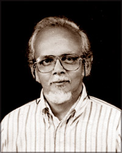
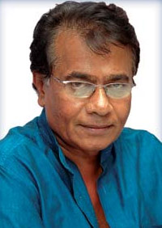

Sir John de Silva
He subsequently wrote and produced several historical and religious plays drawing from nurti and nadagam traditions. These include Siri Sangabo (1903), Sri Vickrama Rajasinghe (1906), Devanampiya Tissa (1914), Vihara Maha Devi (1916) and Dutugemunu. He also scripted Ramayana, Sakuntala, Vessanatara, Uttara Ramacharitaya, Ratnavali and Nagananda.
de Silva staged his early plays at the Public Hall (later the site of Empire Cinema) with the Sinhala Arya Subodha Natya society. He later formed the Vijaya Ranga society and staged his plays at the Gintupitiya Theatre. de Silva died on January 28, 1922. .
Chitrasena
 Amaratunga Arachige Maurice Dias alias Chitrasena was born on January 26, 1921 at Waragoda, Kelaniya in Sri Lanka. His father was late Seebert Dias, well known actor/ producer of the 20s and 30s, founder and instructor for the Colombo Dramatic Club, producer of John de Silva plays, luminary in the theatrical circles of the day, and was a pioneer actor/director of Shakespearean dramas in Sinhala and English. Chitrasena was encouraged by his father from a young age to learn dance and theatre.
Amaratunga Arachige Maurice Dias alias Chitrasena was born on January 26, 1921 at Waragoda, Kelaniya in Sri Lanka. His father was late Seebert Dias, well known actor/ producer of the 20s and 30s, founder and instructor for the Colombo Dramatic Club, producer of John de Silva plays, luminary in the theatrical circles of the day, and was a pioneer actor/director of Shakespearean dramas in Sinhala and English. Chitrasena was encouraged by his father from a young age to learn dance and theatre.
Henry Jayasena
 While with PWD, Jaysena created many of his most famous plays, Pawkarayo (1958) Janelaya (1962), Thavath Udesenak (1964), Manaranjana Wedawarjana (1965), Ahas Malilga (1966), Hunuwataye Kathawa (1967), Apata Puthey Magak Nethey (1968), Diriya Mawa (1972), Makara (1973) and Sarana Siyoth Se Puthini Habha Yana (1975). Before retiring from government work, he also served as Deputy Director for the National Youth Services Council (Arts and Sports Division) and the Sri Lanka Rupavahini Corporation (Programmes Division).
While with PWD, Jaysena created many of his most famous plays, Pawkarayo (1958) Janelaya (1962), Thavath Udesenak (1964), Manaranjana Wedawarjana (1965), Ahas Malilga (1966), Hunuwataye Kathawa (1967), Apata Puthey Magak Nethey (1968), Diriya Mawa (1972), Makara (1973) and Sarana Siyoth Se Puthini Habha Yana (1975). Before retiring from government work, he also served as Deputy Director for the National Youth Services Council (Arts and Sports Division) and the Sri Lanka Rupavahini Corporation (Programmes Division).
Mahagama Sekara
Mahagama Sekara (7 April 1929 – 14 January 1976) is one of Sri Lanka’s well known poets and was a significant figure in Sinhalese poetry. He was also a teacher, lyricist, playwright, novelist, artist, translator and a filmmaker. Sekera is best remembered as a poet and songwriter with several of his works even becoming popular songs in Sri Lanka. His works occasionally have an introspective Buddhist influenced outlook. His poems and songs remain widely quoted on the island nearly thirty years after his death. His demise at the age of forty-seven was considered a tragic loss by many in Sri Lankan literary circles.
prof ashley halpe
It is with profound sorrow that I wish to record the passing away of Prof Ashley Halpe who was closely associated with the University of Peradeniya for over 60 years as student, lecturer, professor, Head of the Department, and Faculty Dean, as well as in key student services positions.
Prof Halpe was quintessentially a renaissance figure, combining the qualities of an outstanding scholar, an organic intellectual with a uniquely creative spirit, which led him to be an internationally recognized poet, painter, translator and dramaturge.
He was a remarkably sensitive and caring human being who nurtured six generations of students at this university and beyond, serving as guide, philosopher, and friend to all who sought his succor, whether they were behind bars or behind in their work.
Somalatha Subasinghe
 Somalatha Subasinghe was born in Gampaha on 2 July 1936. Her father was a principal and her mother was a teacher. She attended Musaeus College and later Buddhist Ladies College, Colombo. After successfully completing her Advance Level examination, she entered the University of Peradeniya in 1958 and read Sinhala, Economics and History for her degree.
Subasinghe joined the Education Department of Sri Lanka in 1962 as a graduate teacher.[3] She taught drama at Nalanda College, Colombo in the mid 1970s.
Somalatha Subasinghe was born in Gampaha on 2 July 1936. Her father was a principal and her mother was a teacher. She attended Musaeus College and later Buddhist Ladies College, Colombo. After successfully completing her Advance Level examination, she entered the University of Peradeniya in 1958 and read Sinhala, Economics and History for her degree.
Subasinghe joined the Education Department of Sri Lanka in 1962 as a graduate teacher.[3] She taught drama at Nalanda College, Colombo in the mid 1970s.
Gamini Haththotuwegama
 He was born on 29 November 1939 in Galle. He completed education from Richmond College, Galle. He entered University of Peradeniya in 1956 and obtained a Honors Degree in English. After obtaining degree, he moved back to Galle and worked as an English teacher and the teacher-in-charge of drama at Richmond College. Then, in 1965, Haththotuwegama joined with University of Kelaniya (known as “Vidyalankara University of Ceylon, Kelaniya” in his days) as a lecturer of English. He retired from the four decades of university service in 2005.
He died on 30 October 2009 at the age of 73 due to long prevailed cancer.
He was born on 29 November 1939 in Galle. He completed education from Richmond College, Galle. He entered University of Peradeniya in 1956 and obtained a Honors Degree in English. After obtaining degree, he moved back to Galle and worked as an English teacher and the teacher-in-charge of drama at Richmond College. Then, in 1965, Haththotuwegama joined with University of Kelaniya (known as “Vidyalankara University of Ceylon, Kelaniya” in his days) as a lecturer of English. He retired from the four decades of university service in 2005.
He died on 30 October 2009 at the age of 73 due to long prevailed cancer.
parakrama niriella
In 1974 Niriella studied Drama & Theater from the Art Center Theater Academy of the Lionel Wendt Memorial Center in Colombo. He started drama career with Gamini Haththotuwegama in 1970s in Sri Lanka’s first street drama troupe. He worked as the street drama organizer in Haththotuwegama’s street drama troop. On December 31, 1976. he produced his first stage play Sekkuwa which was played at Lumbini Theater. The play won several awards at the State Drama Festival in 1976. Niriella won the award for the Best script. In 1998, the play was staged as a new production. In 2017, a series of celebrations were held to celebrate the achievements of Sekkuwa in the drama industry in Sri Lanka. It was held on the 13 February 2017 at the University of Colombo University of Visual and Performing Arts at 4.00 pm. In January 2017, Sekkuwa was presented at the annual polymorphic International Drama Festival held by the Institute of Theater Performing Arts in Mysore, Karnataka, India. He was the chief guest on the opening day of the International Drama Festival.
He continued to produce many stage plays such as Vinischaya in 1979 and Galileo in 1983. Then he produced Uththamavi in 1989. Afterwards, together with H. A. Perera, Niriella produced Warenthu in 1998.
dharmasiri bandaranayake
Kala Keerthi Dharmasiri Bandaranayake (born 06th of October 1949) is a Sri Lankan film director and playwright. Particularly work as a playwright, Bandaranayake is an artist who attempts to connect the sociopolitical environment with the civil society through art.
Bandaranyake’s debut Hansa Vilak in 1980 dealt with facets of a society at odds with itself. His other films like Thunveni Yamaya (1983), Suddilage Kathaawa (1984), Bawa Duka and Bawa Karma (1997) followed similar themes. Two films Bawa Duka and Bawa Karma challenged the repressive dogma of Buddhism in Sri Lanka.[3] Common arcs in Bandaranayake’s films follow the conflicted lives of men and women, transformation of private lives into public affairs, the unpleasant reality of marriage and society and the dark side of human desire.
Dayananda Gunawardena
Gunawardena was born in Halgampitiya in Gampaha, where his father Don Simon was an English Teacher. He completed his schooling from the Government school, Ugampola (1943–46) and Government Secondary School, Veyngoda (1946–51). In 1951, he joined the Ananda College, Colombo. While at school, he was active in many societies such as the drama society and was the Junior Cadet Captain and served as the vice-president of the college geographic society. He was awarded the D. B. Jayatilleke Literary Award and the Amarasena Art Award (both in open categories) while studying at Ananda College. In 1957, he joined the University of Peradiniya and completed his General Arts Qualifying Examination (subjects taken: Sinhala, Geography and Economics).
Namel Weeramuni
 Namel Weeramuni was born in Ahungalle in Balapitiya to a wholesale Cinnamon businessman father and housewife mother. After schooling at village school, Peradeniya Maha Vidyalaya and St. Luke’s College in Ratnapura, Namel entered Nalanda College Colombo. Namel was the President of Nalanda College English and Sinhala Literary Unions and lead debating teams in both languages.
Later he entered University of Peradeniya and graduated with a degree in Sociology. Namel was also the second Communist president in the university.
Namel is the owner of Punchi Theater in Borella that promotes arts and culture in this Sri Lanka and founder of the Namel and Malini Art Circle
Namel Weeramuni was born in Ahungalle in Balapitiya to a wholesale Cinnamon businessman father and housewife mother. After schooling at village school, Peradeniya Maha Vidyalaya and St. Luke’s College in Ratnapura, Namel entered Nalanda College Colombo. Namel was the President of Nalanda College English and Sinhala Literary Unions and lead debating teams in both languages.
Later he entered University of Peradeniya and graduated with a degree in Sociology. Namel was also the second Communist president in the university.
Namel is the owner of Punchi Theater in Borella that promotes arts and culture in this Sri Lanka and founder of the Namel and Malini Art Circle
Jayalath Manoratne
Kala Suri Kala Keerthi Dr. Keselgaspe Manatunga Jayalath Manoratne (Sinhala: කෙසෙල්ගස්පේ මනතුංග ජයලත් මනෝරත්න; 12 June 1948 – 12 January 2020), popularly known as Jayalath Manoratne, was an actor in Sri Lankan cinema, stage drama and television. He was a lecturer by profession as well as a director and producer. A highly versatile actor from drama to comedy, Manoratne won awards at OCIC, Presidential, Sarasavi, Raigam Tele’es, Sumathi and the State Literary and Drama festivals. He was the best actor back to back in 1991 and 1992 for his performance in Socrates and Dvitva. He is considered by critics as one of the five actors who have dominated the Sri Lankan Stage.
Lucien Bulathsinhala
Kala Suri Raigama Bulathsinhalage Lucien Perera (born 25 December 1942, Sinhala: ලූෂන් බුලත්සිංහල), popularly as Lucien Bulathsinhala, is an actor and director in Sri Lankan cinema, theater, and television. Considered one of the iconic figures in Sinhala theater and television, Bulathsinhala has produced several critically acclaimed theater plays in a career spanning for more than five decades. His stage play Tharavo Igilethi is considered a hallmark in Sinhala theater history. Apart from acting, he is a versatile character who performed as director, poet, playwright and lyricist.
Janak Premalal
Lokupathirage Janak Premalal (born May 15, 1959 as ජනක් ප්රේමලාල්) [Sinhala]), is an actor in Sri Lankan cinema, stage drama and television. Highly versatile actor dominated in television, he has acted in more than 200 television serials
He was born on May 15, 1959 in Karannagoda. His father Sirisena Premalal is a script writer and a teacher at Govinna Senior School worked in 1952. His mother Daya Weerakkody was also a teacher who worked in Govinna Primary School. He first attended to Govinna Primary School and then to Horana Sripali Vidyalaya. Then he went to Vidyarathana College, Horana for education since grade 8 He has one brother who is an army officer.
Jayalal Rohana
Maha Egodage Jayalal Rohana Perera (Sinhala: ජයලාල් රෝහණ; 1 November 1964 – 11 February 2021), popularly known as Jayalal Rohana, was an actor in Sri Lankan cinema, theater and television. Highly versatile actor from drama to comedy, Rohana was also a theater director, writer, makeup artist and radio play writer. He has won greater reputation from his bright career as an actor in Television after winning the award for the Best Actor in Sumathi Awards for the role in Isuru Yogaya.
Priyankara Ratnayake
 Priyankara Rathnayake (born June 3, 1964 as Sinhala: ප්රියංකර රත්නායක) is an actor in Sri Lankan cinema, stage drama and television. Highly versatile actor mostly engaged in theater and cinema, Rathnayake is a lecturer and Head of Drama & Theatre and image Arts Unit, Department of Fine Arts in University of Kelaniya by profession.
He started drama career under Somalatha Subasinghe’s children and youth theater and state drama school. Then he joined Rajitha Dissanayake’s drama troupe.
Priyankara Rathnayake (born June 3, 1964 as Sinhala: ප්රියංකර රත්නායක) is an actor in Sri Lankan cinema, stage drama and television. Highly versatile actor mostly engaged in theater and cinema, Rathnayake is a lecturer and Head of Drama & Theatre and image Arts Unit, Department of Fine Arts in University of Kelaniya by profession.
He started drama career under Somalatha Subasinghe’s children and youth theater and state drama school. Then he joined Rajitha Dissanayake’s drama troupe.